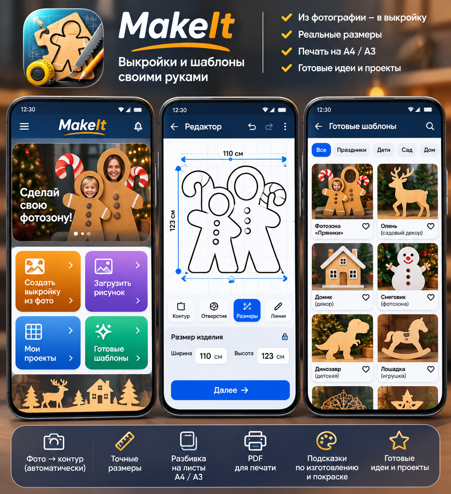

Imagine. Create.
Make it.
Цифровая мастерская для творчества всей семьи. Превращайте фотографии и рисунки в раскраски, выкройки и объёмные фигуры.
Открыть возможностиРаскраски по номерам из ваших фотографий
Любимые фотографии, домашние питомцы, семейные портреты и пейзажи — превращайте их в собственные картины по номерам.

От идеи к готовому изделию
Вдохновение для каждого
Вопросы и ответы
Можно использовать свои фотографии?
Да, MakeIt позволяет создавать раскраски по номерам и шаблоны из собственных изображений.
Подходит ли приложение для семейного творчества?
Да, выбирайте готовые идеи или создавайте собственные проекты.
Можно создавать объёмные фигуры?
В приложении предусмотрен раздел объёмных фигур.

Творите с MakeIt
Imagine. Create. Make it.